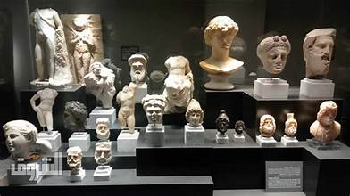

اكتشف أهم المعالم التاريخية والطبيعية بطريقة جذابة
تم إنشاء المتحف اليوناني الروماني في قلب الإسكندرية بشارع فؤاد عام 1892 بهدف حفظ وعرض آثار الحضارة اليونانية والرومانية المكتشفة في مصر. المتحف جاء ليجمع بين الجانب الأكاديمي للباحثين والزوار العاديين، ويهدف لتعليم الأجيال الجديدة عن تاريخ المدينة وثقافتها المتنوعة.
يضم المتحف مجموعات كبيرة من التماثيل الحجرية والبرونزية، العملات القديمة، التوابيت، والقطع الفنية التي تعكس دمج الحضارات المصرية، اليونانية، والرومانية. يعرض المتحف كيفية تطور الحياة اليومية، الدينية، والاجتماعية في العصور القديمة، ويقدم للزائرين فرصة لفهم الفن والهندسة المعمارية التي ميزت تلك الحقبة.
عودة للصفحة الرئيسية